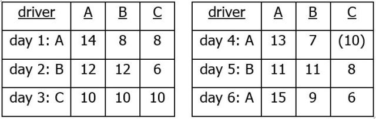
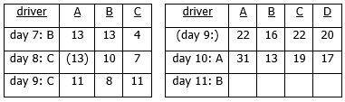

|
 previous / next column previous / next column
A PHYSICIST WRITES . . .
(October 2018)
Are some of you regular car-sharers, either daily to work or less often for other purposes? I've been in such arrangements myself over the years, though always with only one other driver at a time: obviously, it then doesn't matter if one of you is away sometimes - you simply alternate who drives, on the days that you are travelling together.
But I have often wondered how three or more people can arrange regular shared driving between them fairly, when they know it won't actually be regular, because of absences. I came to realize that the aim shouldn't be to equalize the number of times each person drives, or else how often they are a passenger, so much as to divide the cost of each journey equally between those travelling, somehow.
If you are in this situation, you may have it all worked out! But if it's of interest to you, I've devised a scheme that splits the cost of all shared trips, however irregular, equitably and with no money having to change hands. Instead, the group keeps a points-score, and this ensures that everyone takes the wheel the right number of times in the long run. (We do have to assume that the actual cost per mile is the same for each car, otherwise the arithmetic becomes quite complicated...)
Let's start with three drivers, Ann, Bob and Cath - one of whom will need to do the accounting! Each day's travel will 'cost' six points, shared by all the occupants of the car, and owed to the driver by the passengers, that's two points each from the two of them, or three if it's just the one being driven. (We can ignore any solo trips, as the driver will pay the whole cost.) The participants begin with ten points each, so that their scores won't become negative later (probably).
Things go smoothly for the first three days, with Ann then Bob then Cath driving. The left-hand table below shows the balance of points at the end of each day, after the pair of passengers have transferred their two points to the driver. In three days, naturally, the scores are back to ten again. But then on day 4 Cath is absent, indicated by putting her score (still ten) in brackets. Therefore today Bob pays half the six journey-points to Ann who is driving:

Day 5 is routine, with Ann and Cath each passing two points to the driver, Bob. On day 6, however, Cath's car is in for a service when she would otherwise be driving - so Ann does the honours and collects the points from Bob and Cath.
On day 7, resuming the usual (alphabetical) sequence, Bob drives. Afterwards, however, they notice that this leaves Cath rather short of points (see the left-hand table below), and so she offers to drive for the next two days. Ann happens to be away on day 8, with the result that Bob owes three points to the driver (as he did on day 4). And day 9 brings the scores almost into line again:

Now suppose a fourth driver, Dan, asks to join the scheme from day 10: because in the future the journey-points may need to be split between four, three or two travellers, the cost of each trip has to be inflated to 12 points. To match this, the existing scores at the end of day 9 must be doubled up too, as in the right-hand table above. Dan of course starts with 20 points (twice the original ten each).
Off they go on day 10, with Ann driving and being paid three points each by the others. I've left the day 11 scores for you to fill in! No-one is obliged to drive on any particular day, but someone whose score is much lower than those of the others (having accepted more lifts) should put in extra days at the wheel, while anyone who's well ahead (having driven more often) can take a rest, until the points are more equal...
I said above, "if it's of interest to you" - but I do hope most readers have tried to make some sense of this system of mine: dare I suggest that the mental exercise of grasping the details will be good for the brain? Go on, have another read through!
I hesitate to turn now to another aspect of car-sharing, not least because I risk ruffling the feathers of my readers who aren't advanced drivers. First though, here's something that I could be suggesting to them any month: why not sign up, and get the safety-benefit of all the advanced advice (not to mention the boost in confidence from it)? Or at least, take up the current offer of a 'Free Taster' session, locally to you, while it is available: see www.iamroadsmart.com/courses for details.
Next, a big question - how well do motorists believe they drive? When asked this in surveys, the majority think they are above average! This is an 'impossible' result, but does it mean that people tend to over-rate their own driving, or that they observe mainly the faults in those around them? I don't know, but either way it seems that they are failing to see some of their own faults and unsafe habits.
What I do know is the unease experienced by this advanced driver when being driven by others with particular habits: parking the left hand on the gear-stick; bringing the right hand round to 7 o'clock, on a left-hand bend, with little possibility of turning the wheel further if there's a sudden need to (and the certainty of injury if the air-bag happened to go off); a readiness to tailgate or be tailgated; a tendency to speed towards a potential hazard apparently without thought of what to do if it becomes a real one...
Of course you can't drop even a hint of advice, however much you may want to. And when you happen to be driving others, none of your own care and attention seems to be noticed. This I think gets to the heart of the difficulty in attracting more people to advanced tuition: when they are at the wheel, most drivers believe they are skilled enough already, or they do not want to be advised otherwise, or else they simply drive without thinking about it - and so they will probably never volunteer to be made more safe in their own driving, and better protected from the behaviour of others on the road.
Peter Soul
previous / next column
|